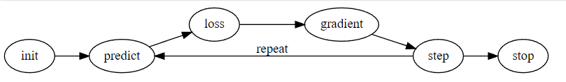

learn = Learner(DataLoaders(dl, valid_dl), nn.Linear(28*28), opt_func=SGD, loss_func=mnist_loss, metrics=batch_accuracy)
learn.fit(10, lr=1)I’m back, covering the second part of chapter 3: the book part. Which is roughly chapter 4 of the book. Getting “Don’t Do What Donny Don’t Does” vibes with this every so often.
Anyway, this chapter worked with part of the MNIST dataset, which is a bunch of small 28x28 images of hand-written digits. It’s just a partial dataset, looking at 3s and 7s, and trying to distinguish them.
We started by coming up with a non-machine learning baseline: stacking all the images of the 3s and averaging them to get a fuzzy “ideal” 3. Repeat for the 7s. Then for any test image, we could compare how closely it matched each of the ‘ideal’ digits. In theory, any given 3 would have more in common with the fuzzy averaged 3 than the fuzzy average 7.
Here we learned about how to quantify things like ‘how closely an image matches another’ by using a loss function such as the L1 norm. Turns out that’s just the mean absolute difference: (test3 -avg3).abs().mean() There’s also the root mean squared error, where you square the difference, take the mean, then take the square root: ((test3 - avg3)**2).mean().sqrt()
Both are just ways of ensuring errors in either direction (positive and negative) are able to accumulate rather than just cancelling out.
Turns out this approach isn’t bad! But the test case is very basic: 3s and 7s are pretty different after all.
Okay, Hol Up
Writing out what the lessons contained is useful for me checking my understanding. It’s very time-consuming though, and I’m eager to move on to new material. It’s not necessarily useful for me to put out a patchy copy of the lessons into the universe anyway - there’s no way anybody could learn from what I’m writing (and the primary source is just far better anyway).
So let me quickly recap what was covered without getting into the details. Then talk about where my head is at with all of this.
Chapter 4ish of the book
An end to end example of Stochastic Gradient Descent
This was great. It was the parabola example from the video, but I implemented it all the way through for this 7 step machine learning process:

- Initialize the parameters
- Calculate the predictions
- Calculate the loss
- Calculate the gradients
- Step the weights
- Repeat the process
- Stop
“Initialize the parameters” is the stochastic part: i.e. choose random values. “Calculate the predictions” means run the quadratic function with our current parameter values. Here we also plotted results, which was great visualization. “Calculate the loss” was done by writing our own mean squared error function (see above). “Calculate the gradients” was the loss.backward() call to get the params.grad value. “Step the weights” is the gradient descent part of the name (subtract a small fraction [learning rate] of the gradient from the params) “Repeat the process” and “Stop” were some loops.
This part was great! It was a solid reinforcement of the same concept shown in the video.
Apply this to the MNIST Loss Function
Next we did the same process but with the MNIST data set. Immediately we run into some more practical considerations regarding the function we have to use and the dimensions of the problem.
We know we’re going to model it with a linear equation (\(y = mx + b\)). But the input isn’t just a single \(x\), it’s a 28x28 image. So really it’s \(y = m_1x_1 + m_2x_2 + m_3x_3 + ... + m_{784}x_{784} + b\). I think. We end up with a tensor of size 784 to hold the weights (parameters) for our model.
Here we start learning about performance optimizations already. Doing a repeated sum of products as described above is just matrix multiplication, which is def linear1(xb): xb@weights + bias.
Another important concept is the difference between our metric and the loss function. Basically, the metric is something we use to drive human understanding whereas the loss function is something we use to drive the machine learning process.
The difference: our metric here is accuracy, which is a binary right or wrong for every image in the test set. It could take a big change in the behaviour of the model to flip a prediction from wrong to right (or vice versa), so it wouldn’t be good for taking tiny learning steps. Conversely, the loss function conveys how close (or far) a prediction is from being correct and can be used to tune a model. It’s not as immediately intuitive for human consumption though (although arguably people may care about how ‘confident’ a prediction is).
There’s more work getting this example through the process, a bunch of which is bogged down somewhat by wrangling tensor dimensions. As we go through each part though, we find (unsurprisingly!) that PyTorch and/or fastai have built-in definitions for common functions like sigmoid() (for ensuring data is in the range \((0, 1)\)), creating linear models and initializing parameters (nn.Linear), a stochastic gradient descent optimizater (SGD(model, learning_rate)), and a learning process loop (Learner, which takes a DataLoaders object, which itself is a DataLoader for both the training and validation sets). It’s all good stuff.
Basically we write it all from scratch to understand what something like this is actually doing:
Non-Linearity
The chapter wraps up by explaining how a ReLU works, and how you can sandwich one between two linear functions to get that magical universal approximation theorem sequence of short lines to follow an arbitrarily wiggly function. We even get a peek at how to very quickly create one of these layered networks:
simple_net = nn.Sequential(
nn.Linear(28*28, 30),
nn.ReLU(),
nn.Linear(30, 1)
)This is super promising! To me this shows that libraries have progressed to the point where we genuinely don’t need to worry so much about these ‘from scratch’ details and can instead focus more on model architecture. I’m very glad to have covered the basics though, because I don’t think I could readily accept these helper functions had we not established what they are actually doing.
Now having said that, I’m still in the dark about why you would choose any particular structure. Why does the second linear layer have 30 inputs? The text introduces the idea that deeper networks can produce more accurate results with fewer parameters than giant single layer networks, but with the caveat that they can be harder to train.
It’s still hand-wavey at this point. I’m eager to learn more.
Some Python (& library) things I’ve learned
Broadcasting: a PyTorch feature (syntactic sugar) that makes working with different shaped tensors much easier and performant. Rather than looping, if a higher ranked tensor is involved in a calculation with a lower ranked tensor, the lower rank tensor will be ‘virtually’ copied (not actually copied) to become the same shape as the higher rank tensor.
Partial: bake a few parameters of a python method to return a simpler instance of that method (like when we baked
a, b, cin the quadratic function so that onlyxwas a parameter)*(spread): take a list in python and apply them to the input parameters of a function. Allows you to do this:
params = [1, 2, 3, 4]
def f(a, b, c, d): return a + b + c + d
print(f"f(params[0], params[1], params[2], params[3]) is: {f(params[0], params[1], params[2], params[3])}")
print(f"f(*params) is: {f(*params)}")f(params[0], params[1], params[2], params[3]) is: 10
f(*params) is: 10- PyTorch methods that end with
_: they modify the object in place. e.g.bias.zero_()modifies thebiastensor, rather than returning a modified copy.
Stuff that’s still messing me up
Tensor shapes are still not intuitive to me. There are occasions when we initialized our parameters with a size of (28*28, 1) and I don’t know why it wasn’t just (28*28). Sometimes we take the .T in an example (presumably the transpose of a matrix?). We’ve been using unsqueeze and view and stack and… I can usually work it out at the time, but I don’t think I’d go to them if I was trying to solve the problem on my own.
More practice needed!